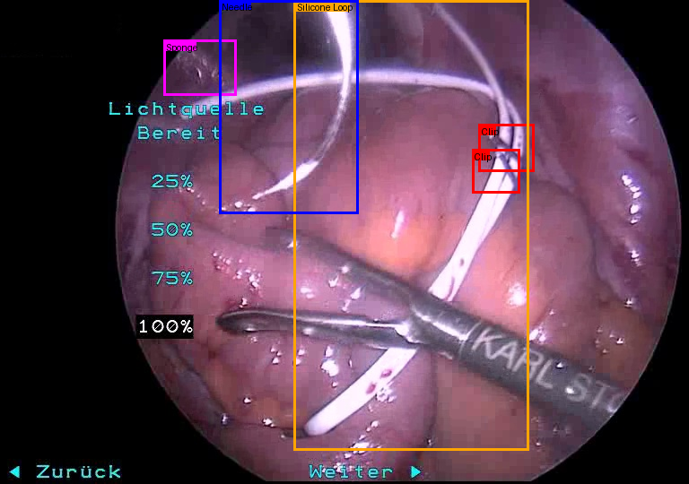
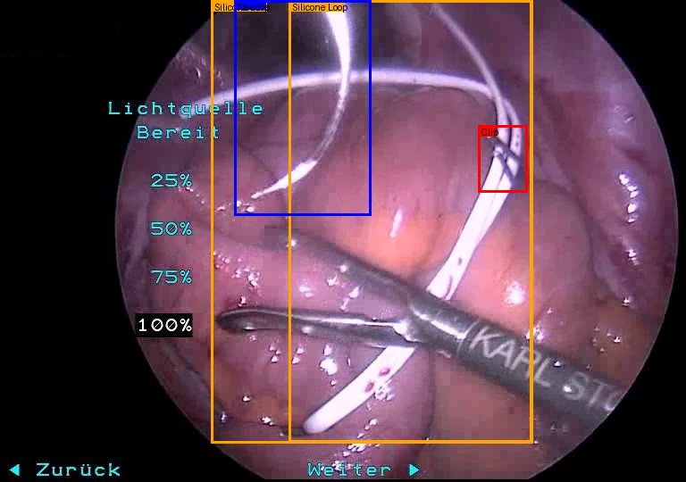
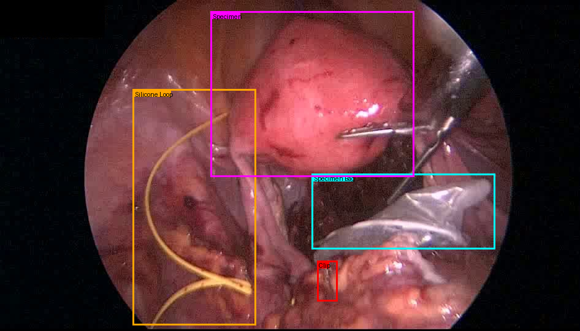
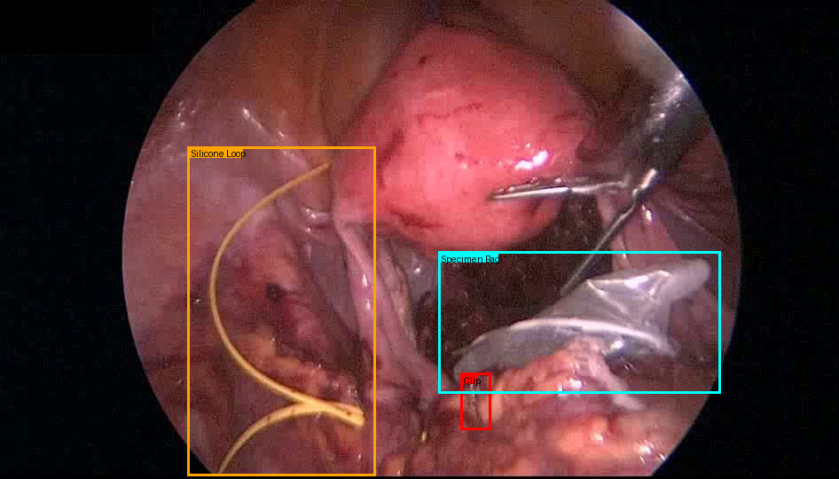

A
Object recognition
Detect the relevant objects, identify them, then answer basic questions about their presence or state.
Core operation What is visible?
Detect the relevant objects, identify them, then answer basic questions about their presence or state.
Count object instances, then use that count to answer a simple question about the scene.
Both tracks combine visual perception with lightweight reasoning.
We compared a broad set of VLM baselines before selecting Qwen3.8 27B.
It gave us the best balance between visual capability and deployability for the challenge.
Unlike the first experiments, the final recipe adapts the vision and language components.
final rank
Tristan manually annotated bounding boxes.
3,205 bounding boxes over 1,687 frames.
The goal was to target object detection directly instead of relying only on question-answer supervision.
Generate candidate regions, then pass the crops to Qwen for recognition and reasoning.
Use the manual boxes to strengthen object-level visual supervision.
Let SAM3 tokens cross-attend with Qwen tokens inside the model.




Repeated, tiny instances are easy to miss or merge.
Typical case: clipsLimited exposure makes uncommon classes hard to recognize.
Typical case: specimen| Test set | Subset | Recognition | Aggregation |
|---|---|---|---|
| Public | HeiCo | 79 | 80 |
| LapChole | 78 | 45 | |
| Leaderboard private | ID | 64 | 52 |
| OOD | 45 | 60 |
ID: in distribution. OOD: out of distribution.